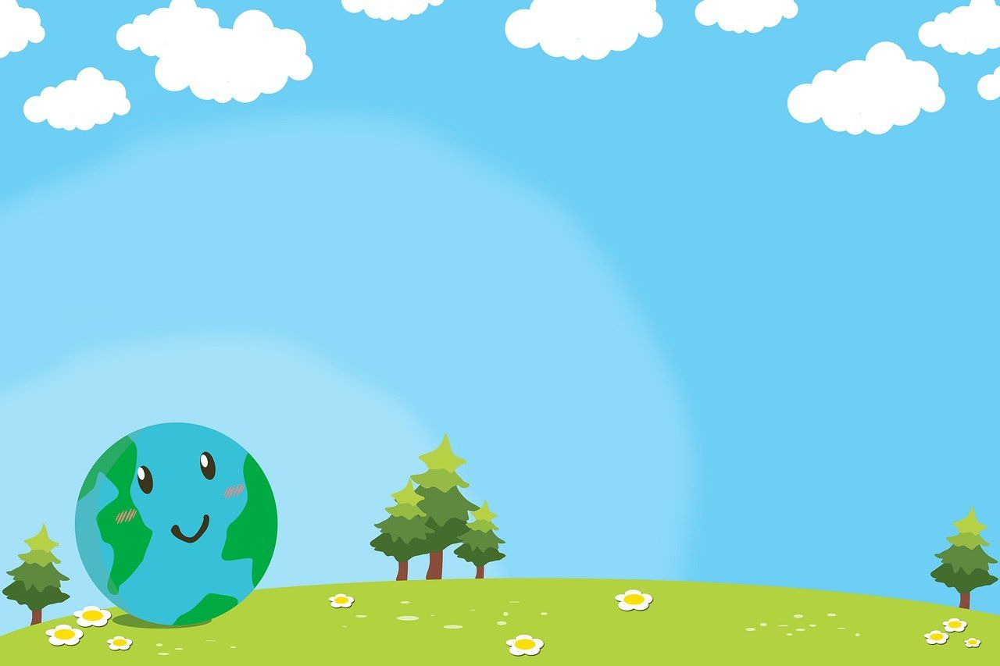

Setelah membaca tentang Bumi dan apa yang menyebabkan Bumi memanas, hendaklah kita menyadari bahwa sedikit demi sedikit, Bumi akan semakin memburuk kondisinya jika kita diam saja. Oleh karena itu, kita harus mengusahakan dengan seluruh kemampuan kita agar setidaknya, kita bisa mengurangi hal-hal yang dapat merusaknya.
Apa yang dapat kita lakukan?
{kind=link}
'Menyelamatkan Bumi' memang terdengar sangat berat, padahal kita bisa menjaganya dengan melakukan hal-hal sederhana yang bisa dilakukan dalam kehidupan sehari-hari, diantaranya:
Dengan tidak membuang sampah sembarangan, kita sebenarnya sudah berpartisipasi dalam pelestarian Bumi lho! Tapi kalian mungkin berpikir, "Apa hubunganya tidak buang sampah sembarangan dengan pelestarian Bumi?". Dengan membuang sampah pada tempat sampah daripada membuangnya di tanah begitu saja, lebih bagus mana? Pastilah jawabanya membuang sampah di tempatnya, karena dengan begitu tanah tidak akan tercemar. Jika tanah tercemar, maka tanaman tidak dapat tumbuh. Dan jika tidak ada tanaman, maka Bumi akan kekurangan oksigen. Nah, hal tersebut sangat sederhana, kan? Tapi dampaknya begitu besar. Oleh karena itu, mari kita membiasakan buang sampah pada tempatnya.
{kind=link}
Beberapa dari kalian mungkin bertanya-tanya, "Apa sih 3R itu?". 3R disini adalah singkatan dari "Reduce, Reuse, dan Recycle". "Reduce" berarti mengurangi, contohnya apa? Kalau kita pergi ke supermarket atau ke toko untuk membeli barang, lebih baik kita bawa tas belanjaan dari rumah daripada memakai plastik yang disediakan disana agar jumlah sampah plastik berkurang. "Reuse" berarti menggunakan kembali, contohnya yaitu menulis dengan menggunakan kedua bagian kertas daripada menulis di satu bagian kertas lalu berganti menggunakan kertas lain. Dengan begitu, semakin sedikit pohon yang harus ditebang untuk menghasilkan kertas tersebut. "Recycle" berarti mendaur ulang, contohnya yaitu menggunakan botol bekas sebagai pot untuk tanaman. Tidak hanya mengurangi sampah botol disekitar kita, tetapi juga berarti kita sudah menghijaukan lingkungan sekitar.
Mungkin ini adalah cara yang paling sering kalian dengar, dan ya, pohon memang berperan penting dalam kehidupan kita. Tanpa adanya pohon, kita tidak akan bisa bernapas dengan baik karena sumber utama oksigen di Bumi adalah pohon. Tanpa pohon, kita pun tidak akan bisa menulis dan berkarya di atas kertas. Coba kalian bayangkan, dalam kelas kalian saja, satu siswa mempunyai berapa buku? Kalikan jumlah tersebut dengan banyak siswa di kelas kalian, lalu kalikan hasilnya dengan banyak kelas yang sekolah kalian miliki. Cukup banyak, bukan? Pastinya dengan jumlah kertas yang banyak tersebut, banyak pula pohon yang menjadi korbanya. Karena itu, kita harus lebih mempertimbangkan tujuan kita saat menggunakan kertas agar pohon-pohon yang ditebang tersebut tidak terbuang sia-sia.
Di antara kalian, mana yang lebih suka naik sepeda daripada pesan ojek online atau naik kendaraan pribadi? Selain menyehatkan, ternyata naik sepeda itu termasuk dalam upaya pelestarian Bumi lho! Kenapa? Karena pada saat naik sepeda, kita tidak mengeluarkan asap yang mengandung CO2. Dengan begitu, lapisan ozon akan tetap aman. Marilah kia membiasakan mengurangi naik kendaraan pribadi kecuali jika mendesak saja.
Meskipun masih belum banyak, sekarang sudah mulai bermunculan berbagai hal yang memanfaatkan sumber energi alternatif. Mulai dari mobil listrik, panel surya untuk lampu persimpangan, kincir angin untuk menghasilkan listrik, dan masih banyak lagi! Sungguh beruntung kita berada di garis khatulistiwa, dimana sinar matahari adalah sesuatu yang amat sangat berlimpah. Coba bayangkan apabila seluruh Indonesia sudah memanfaatkan teknologi panel surya, pastilah jumlah tenaga yang dihasilkan sangat besar. Penggunaan sumber-sumber energi ini merupakan langkah besar dalam pelestarian Bumi. Selain dapat diperbarui, dengan adanya hal tersebut kita bisa beralih secara perlahan dari menggunakan batu bara dan bahan fosil lainya ke sumber energi yang lebih ramah lingkungan. Itu berarti kita tidak perlu lagi merusak tanah dengan menambangnya hingga berlubang-lubang. Penggunaan energi tersebut juga tidak menghasilkan polusi, jadi sangat bagus untuk lingkungan.
Mudah sekali, kan? Setelah mengetahui semua ini, hendaknya kita mulai memperhatikan kegiatan-kegiatan yang biasa kita lakukan dan memikirkan apa yang dapat kita lakukan agar bisa berpartisipasi dalam melestarikan bumi kita. Marilah pula kita saling mengingatkan satu sama lain agar tidak lupa terhadap hal ini, karena kalau bukan kita maka siapa lagi yang akan melakukanya?